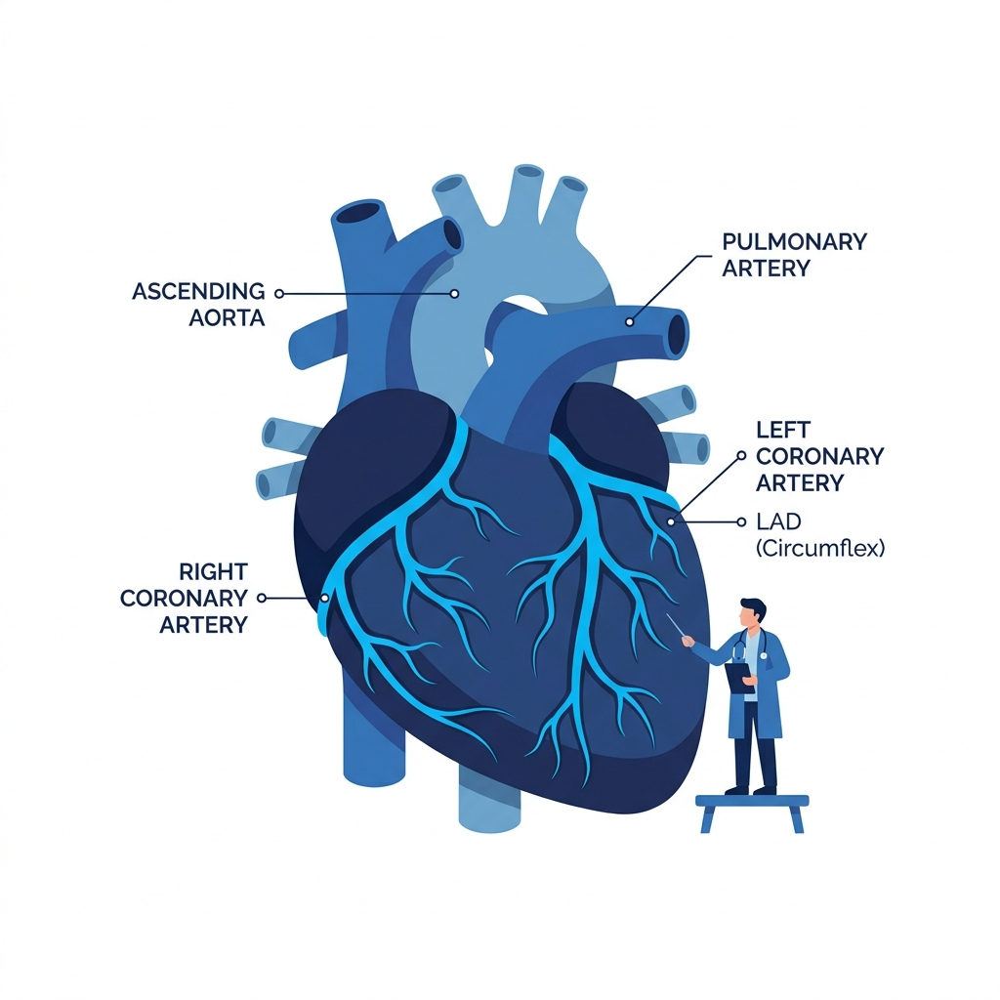
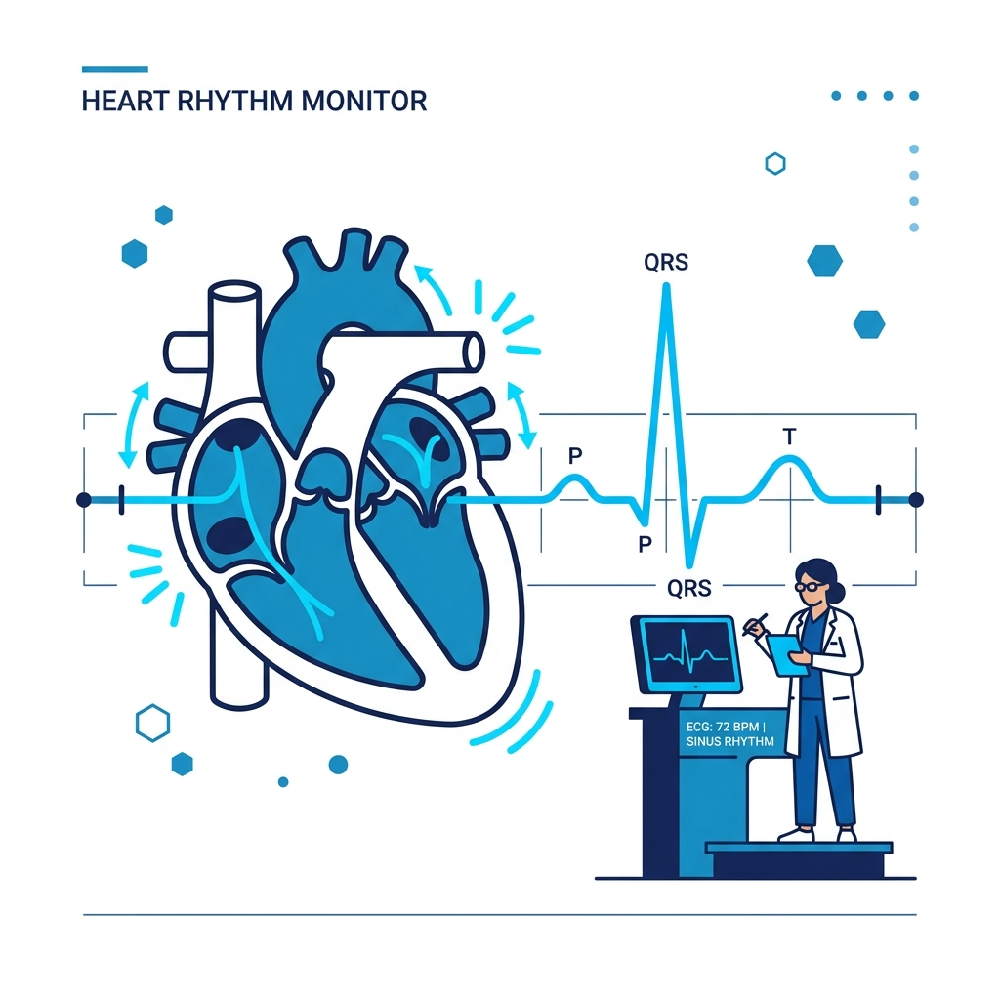
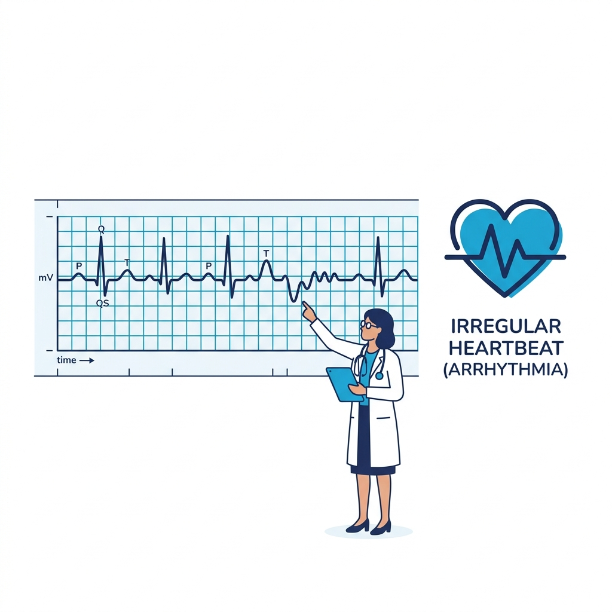
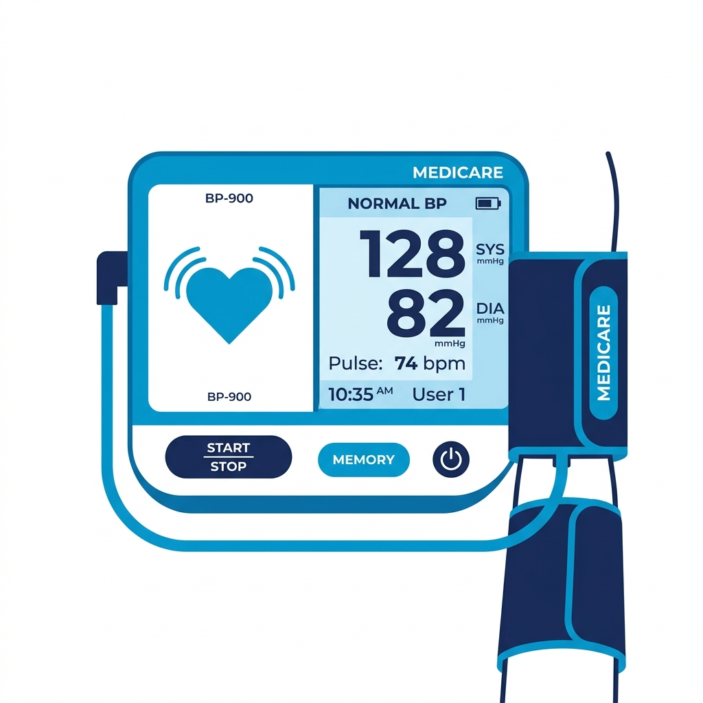
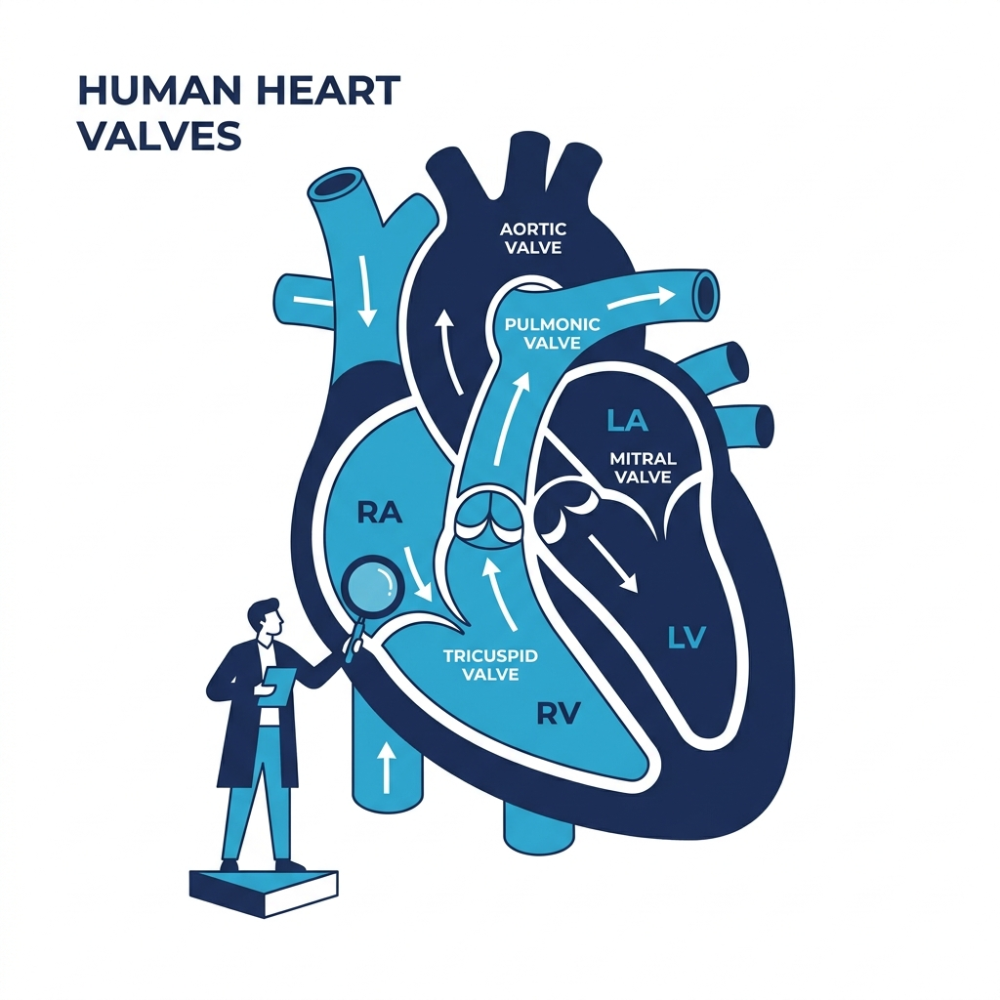
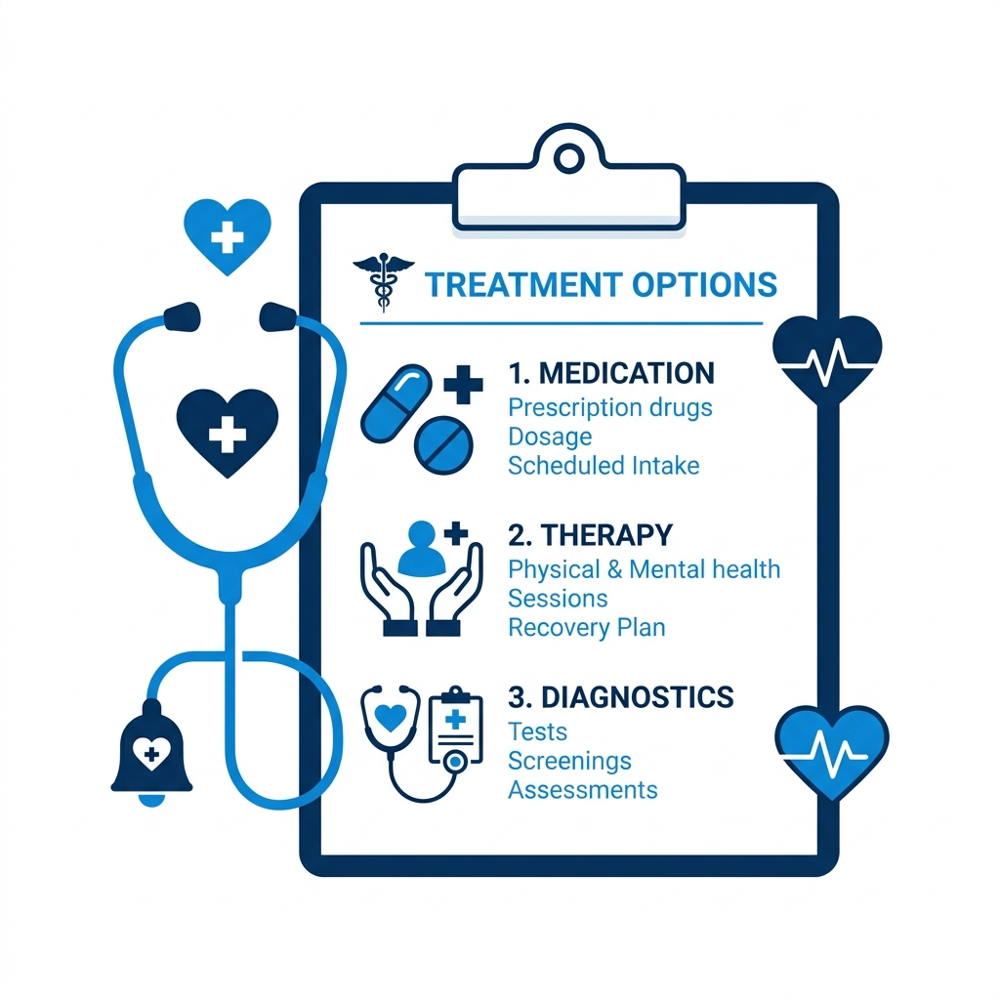

Supreme Excellence
Department of Cardiology
Advanced cardiac care and clinical heart-health solutions focused on precision and restorative healing.
Your Partner in Heart Health
At Supreme Hospital, we understand that the heart is the most vital organ in the human body. That's why we are dedicated to providing the highest quality cardiovascular care to our patients. Our team of experienced cardiologists and cardiac surgeons is committed to using the latest technologies and techniques to provide the best possible outcomes for our patients. We offer a wide range of heart surgeries including heart transplant surgery.
Advanced Cardiac Interventions
Supreme Hospital goes beyond Cardiac Surgery. Our state-of-the-art facilities offer modern diagnostic tools and cutting-edge treatment options. As leaders in Cardiac Surgery, our skilled team excels in routine procedures and complex surgeries, guaranteeing optimal outcomes. Moreover, our commitment extends to life-changing interventions, showcasing expertise in heart transplant procedures. At Supreme Hospital's Cardiology Department, revel in medical excellence, personalized care, and a comprehensive approach to enhance your heart health.
Heart Transplant Surgery
Comprehensive Care for Heart Conditions

Coronary Artery Disease (CAD)
Supreme Hospital leads the charge in managing CAD, and addressing narrowed or blocked coronary arteries to mitigate chest pain and prevent heart attacks.

Heart Failure
Our specialized care ensures effective management of heart failure symptoms, promoting a better quality of life for our patients.

Arrhythmias
From atrial fibrillation to ventricular tachycardia, we expertly handle irregular heart rhythms to reduce the risk of complications.

Hypertension (High Blood Pressure)
We focus on managing elevated blood pressure levels to alleviate strain on the heart and minimize the risk of heart disease and stroke.

Valvular Heart Disease
We offer specialized treatment for heart valve problems, tackling issues like stenosis or regurgitation to enhance blood flow and optimize heart function.
Congenital Heart Defects
Supreme Hospital provides comprehensive care for congenital heart conditions, ensuring personalized treatment for defects present at birth.

Treatment Options for Your Heart
From prescribed medications and lifestyle adjustments to surgical interventions such as angioplasty, stent placement, or open-heart surgery, we tailor our approach based on your specific diagnosis and the severity of your condition.
Visit Supreme Hospital – Your Gateway to Premier Cardiac Care
Supreme Hospital understands the importance of early diagnosis and precise management, aiming to significantly enhance your quality of life while minimizing serious complications. We offer scans and tests in one place to reduce your hassle so you are treated without further delays.
Explore cardiac care at Supreme Hospital and begin your journey to maintain optimal cardiac health.
Expert Guidance
Our Cardiologists
Dr. Anand Manjunath. K
MBBS
MD Peadiatrics, DM Cardiology
Dr. Arun Arockia Rajesh. J
MBBS
MD (General Medicine) DM (Cardiology)
Common Queries
Cardiology FAQ
Common symptoms include chest pain or discomfort, shortness of breath, fatigue, irregular heartbeats, dizziness, and swelling in the legs or ankles.
During your initial visit, the cardiologist will review your medical history, perform a physical examination, and may conduct tests like an electrocardiogram (ECG) to assess your heart health.
It's advisable to have heart health screenings at least every 2 to 4 years starting at age 20. However, individuals with risk factors may need more frequent check-ups as recommended by their healthcare provider.
If your insurance claim is denied, you can file an internal appeal with your insurer. This involves requesting a reconsideration of the decision, following the insurer's specific procedures.
To determine if Supreme Multi Speciality Hospital accepts your company's health insurance, please contact our billing department or your insurance provider for confirmation.